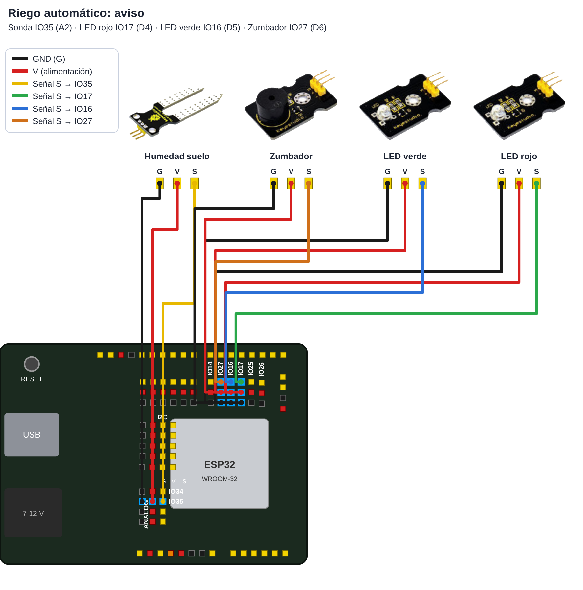
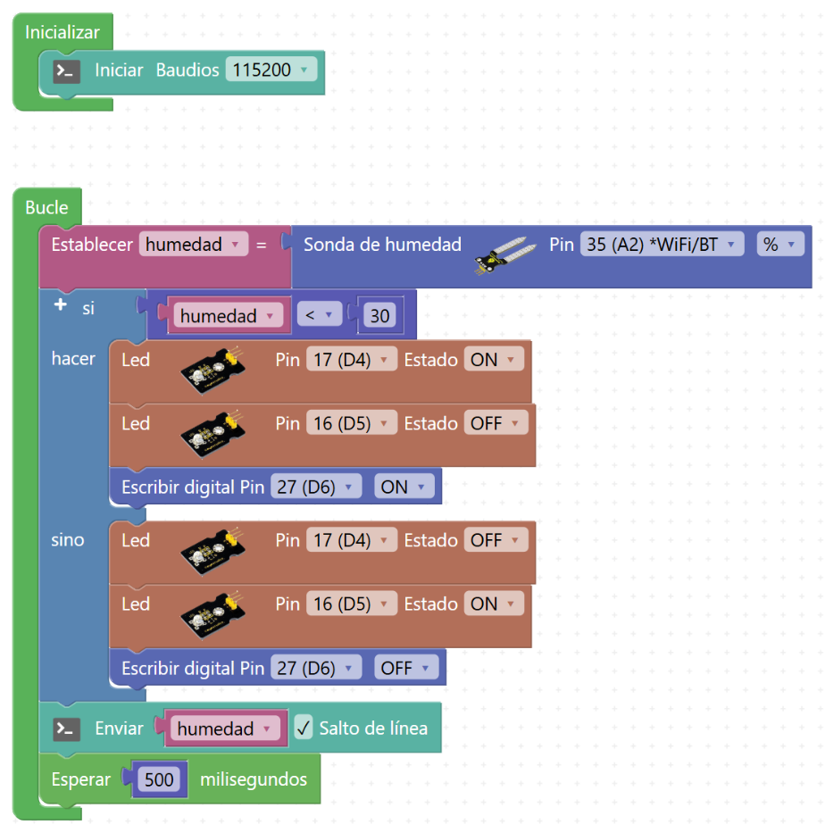
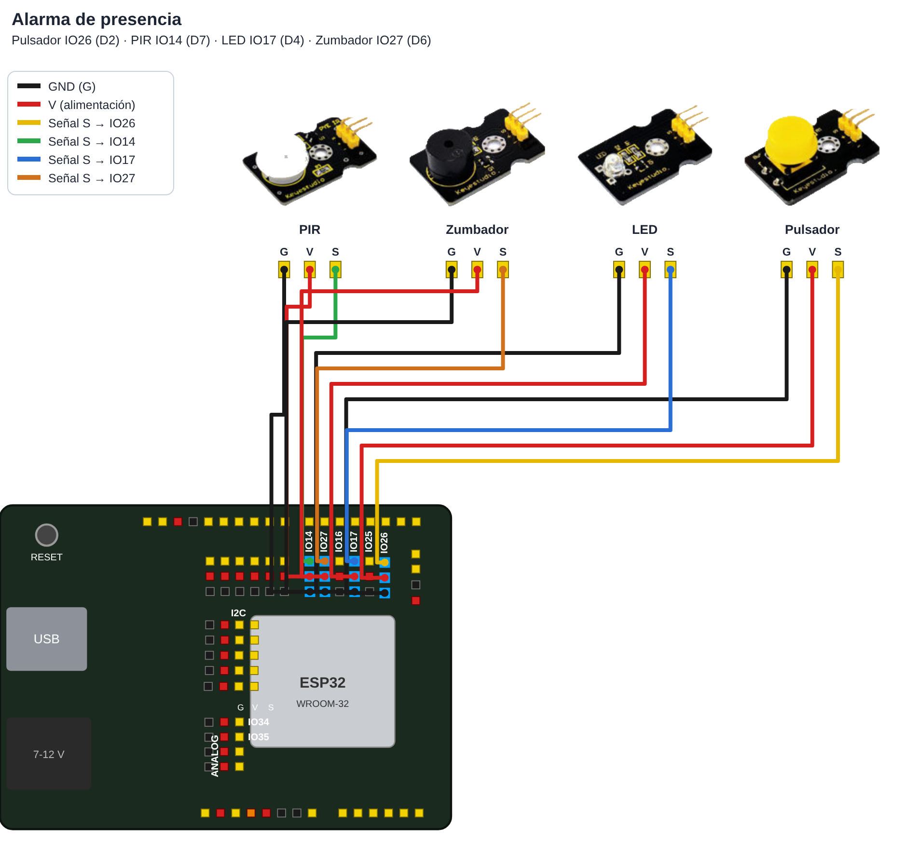
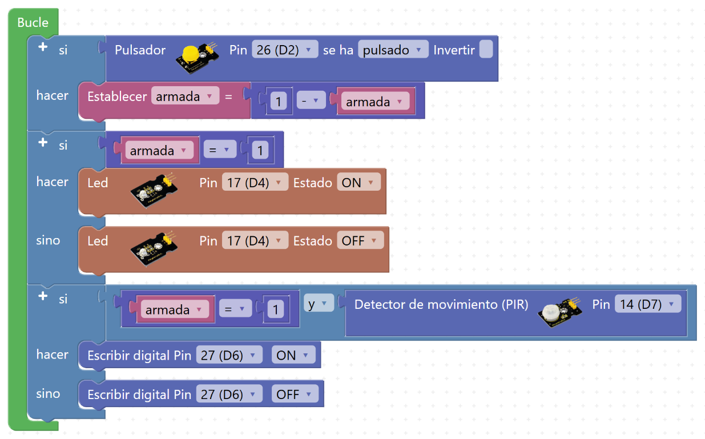
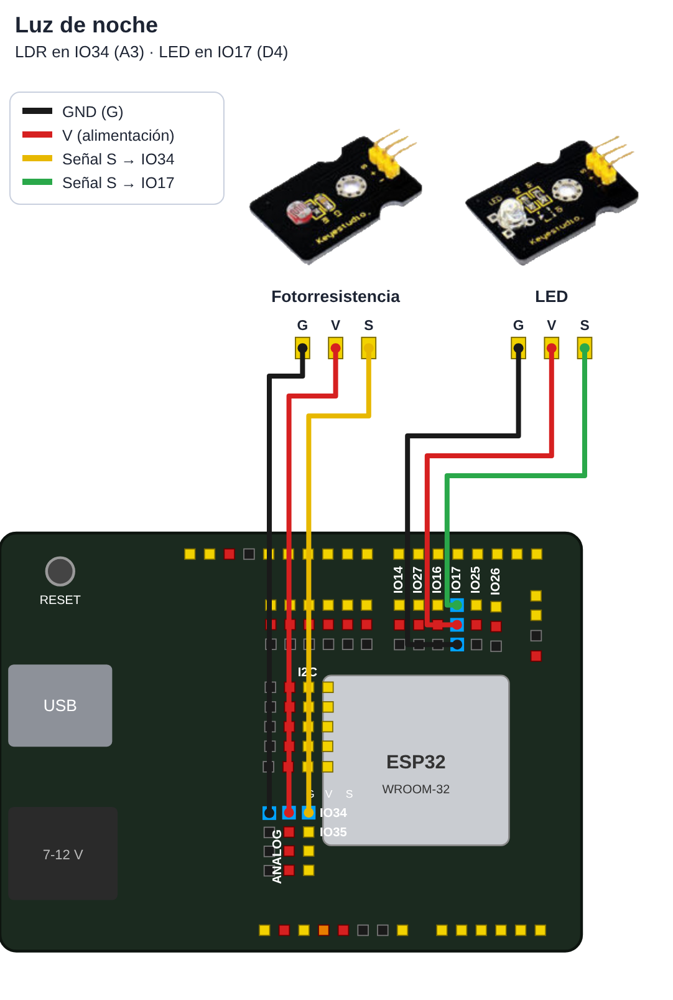
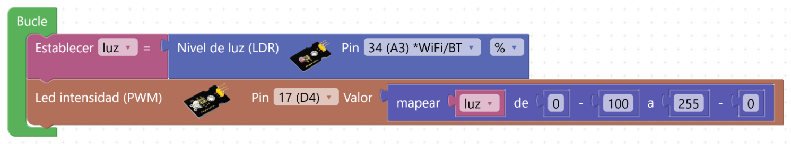

PI Sensores + actuadores
Después del repaso toca construir. En estas prácticas combinas varios sensores y actuadores, guardas estados en variables, calibras con medidas y decides con umbrales. Son las que más se parecen a un proyecto real y las que mejor preparan para el servidor web, ESP-NOW y la placa con IA.
🧭 Cómo se trabaja
Aquí unes lo que has repasado: sensores que miden, actuadores que responden y un programa que decide. Cada práctica tiene una situación, un esquema, un programa de partida y retos en tres niveles. El programa de partida funciona, pero deja decisiones abiertas (umbrales, tiempos) que tienes que ajustar con medidas de tu montaje.
- Lee la situación y escribe en el porfolio qué entradas y qué salidas necesita, antes de coger ningún cable.
- Monta siguiendo el esquema y pide revisión por otra persona con la lista de comprobación.
- Sube el programa de partida y comprueba cada parte por separado.
- Ajusta los umbrales con medidas reales y anota los valores.
- Resuelve los retos, de menor a mayor nivel.
🌱 PI1 · Aviso de riego
1 · Esquema de conexiones

| Módulo | Pin de señal |
|---|---|
| Sonda de humedad de suelo | IO35 (A2) |
| LED rojo | IO17 (D4) |
| LED verde | IO16 (D5) |
| Zumbador activo | IO27 (D6) |
2 · Programa de partida

Se guarda la humedad en una variable, se compara con el umbral (30 %) y se actúa sobre tres salidas a la vez. El valor se envía por el puerto serie para calibrar. El 30 % es un valor de ejemplo: tu sonda y tu tierra darán otros, y por eso hay que medir.
3 · Retos
Dos umbrales
Añade un estado intermedio: por debajo del 20 % suena el zumbador; entre el 20 y el 40 % solo se enciende el LED rojo.
Histéresis
Enciende la alarma por debajo del 30 % y no la apagues hasta superar el 40 %.
Calibración propia
Mide aire, tierra seca y tierra mojada y usa mapear y limitar para obtener un porcentaje propio. Calcula la media de 10 lecturas.
Entrega en el porfolio: foto del montaje, tabla de medidas (aire, seco, mojado), umbral elegido y justificación, programa del reto.
🚨 PI2 · Alarma de presencia
1 · Esquema de conexiones

| Módulo | Pin de señal |
|---|---|
| Pulsador | IO26 (D2) |
| Sensor PIR | IO14 (D7) |
| LED | IO17 (D4) |
| Zumbador activo | IO27 (D6) |
2 · Programa de partida

La variable armada guarda el estado (0 o 1). Cada pulsación lo invierte con 1 − armada. La alarma solo suena si armada vale 1 y el PIR detecta movimiento. Fíjate en el bloque «se ha pulsado»: sin él, una pulsación larga armaría y desarmaría muchas veces.
3 · Retos
Tiempo de alarma
Haz que, tras detectar movimiento, el zumbador suene exactamente 3 segundos.
Armado con retardo
Al armar, espera 10 segundos antes de vigilar y muestra la cuenta atrás por el puerto serie.
Memoria de intrusión
La alarma sigue sonando después de que el intruso se vaya, hasta que se desarme. Cuenta cuántas intrusiones ha habido.
Entrega en el porfolio: foto del montaje, diagrama de estados (armada / desarmada) dibujado a mano y programa del reto.
🌙 PI3 · Luz de noche
1 · Esquema de conexiones

| Módulo | Pin de señal |
|---|---|
| Fotorresistencia (LDR) | IO34 (A3) |
| LED | IO17 (D4) |
2 · Programa de partida

Se mide la luz en porcentaje y se mapea de forma inversa (0–100 a 255–0): menos luz, más brillo. Observa que el mapeo no cambia de sentido por casualidad: se invierte poniendo el rango de salida al revés.
3 · Retos
Más luz, más brillo
Invierte el comportamiento y comprueba qué ocurre.
Solo de noche
El LED solo se enciende por debajo del 30 % de luz y se apaga por completo por encima, con histéresis.
Automático o manual
Un pulsador cambia entre modo automático y modo manual, y en manual un potenciómetro fija el brillo.
Entrega en el porfolio: foto del montaje, rango medido de tu LDR (tapada y con luz), programa del reto y una explicación del mapeo que has usado.
🖥️ Sensores I2C y pantallas
El siguiente paso son los sensores y las pantallas que se conectan por I2C: dos hilos de datos (SDA y SCL) más alimentación, y un bus que permite varios dispositivos a la vez. La placa tiene un bloque de conectores I2C con GND, V, SDA y SCL, y el editor tiene bloques de Visualización para pantallas OLED y LCD.
En el taller hay sensores de CO₂ y de pulso, y pantallas OLED y LCD. Las prácticas se plantearán igual que las anteriores: medir (CO₂ o pulso), mostrar en la pantalla y avisar con LED o zumbador al pasar un umbral.
✅ Evaluación
Cada práctica se valora con la misma rúbrica. Los niveles describen lo que el alumno hace, no cuánto se equivoca, y cualquier formato de evidencia es válido si muestra lo pedido: foto, vídeo corto, esquema a mano o explicación oral.
| Criterio | Iniciado | En proceso | Logrado | Destacado |
|---|---|---|---|---|
| Montaje | Necesita ayuda para cablear. | Monta con el esquema y corrige errores con ayuda. | Monta sin errores y lo revisa con la lista. | Monta, revisa a otros y documenta mejoras. |
| Programa | El programa de partida funciona con ayuda. | Sube y modifica el programa de partida. | Resuelve el reto básico y el medio. | Resuelve el reto pro y explica su programa. |
| Medidas y ajuste | Copia los valores del ejemplo. | Mide, pero no ajusta el programa. | Ajusta umbrales con sus medidas. | Justifica sus umbrales y valida con pruebas repetidas. |
| Porfolio | Entrega incompleto. | Entrega las evidencias básicas. | Entrega todo y explica. | Entrega todo, analiza fallos y propone mejoras. |
| Trabajo en grupo | Participa si se le pide. | Cumple su tarea. | Reparte tareas y revisa a sus compañeros. | Coordina y ayuda a otros grupos. |
Los criterios de evaluación concretos de la programación didáctica se vincularán a esta rúbrica cuando estén cerrados.